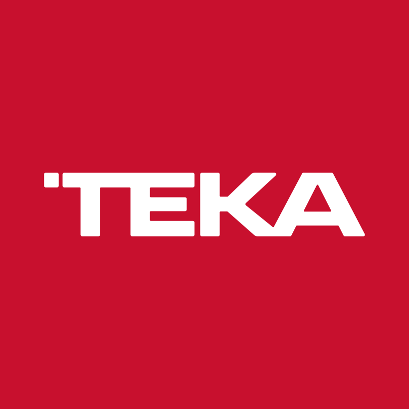

Communications professional specialised in digital adoption,
knowledge management and enablement in technology-driven
environments. Currently at McKinsey & Company, driving the adoption of enterprise tools
such as ServiceNow across global teams.
I act as a bridge between technical teams (engineering, product) and business stakeholders,
designing content strategies, training programmes and knowledge-management frameworks that
reduce friction, increase adoption and accelerate digital transformation.
Main Skills
Click any skill to discover the value I bring.
🗂️
Knowledge Management
I build scalable, user-centred knowledge ecosystems that turn tribal knowledge into
structured, findable content — reducing support load and enabling teams to self-serve
with confidence.
✍️
Content Strategy
I design content that meets people where they are — articles, tutorials, live demos,
and video — tailored to the audience's needs and aligned to business goals. The result is
higher engagement and measurably faster time-to-competency.
🚀
Digital Adoption & Change Management
I translate complex tool roll-outs into smooth, human experiences. By combining
enablement content with change-management principles I help global teams adopt new
technology faster and with less resistance.
🤝
Stakeholder Management
I work across engineering, product, design and business leadership — translating
technical constraints into plain language and aligning diverse teams around shared
goals. I also run and grow communities of knowledge owners to embed good practices
at scale.
🎤
Training & Facilitation
I design and deliver engaging training sessions, office hours and internal events
that build genuine user autonomy. My approach focuses on practical application so
people leave ready to act, not just informed.
Work Experience
McKinsey & CompanyOct 2022 – Present · Prague & Madrid
Content Strategist – Knowledge Management / Digital Adoption
Lead digital adoption and knowledge enablement initiatives for internal tools, with a focus on ServiceNow, facilitating adoption across global teams.
Design and develop content and training strategies (articles, tutorials, demos, live sessions) aligned with business and user needs.
Analyse usage and engagement metrics via dashboards to identify knowledge gaps and optimise the user experience.
Collaborate with product, engineering, change management and design teams, acting as a bridge between technical areas and stakeholders.
Facilitate training sessions, office hours and internal events to improve adoption and user autonomy.
Drive and manage a community of knowledge owners, promoting best practices and continuous improvement.

Teka GroupSep 2021 – Sep 2022 · Madrid
Communications & Events Assistant
Coordinated corporate events and communication actions at national and international level.
Managed stakeholders and local teams across multiple markets.
Developed corporate content and communication materials for diverse audiences.
Supported external communication and public relations initiatives.